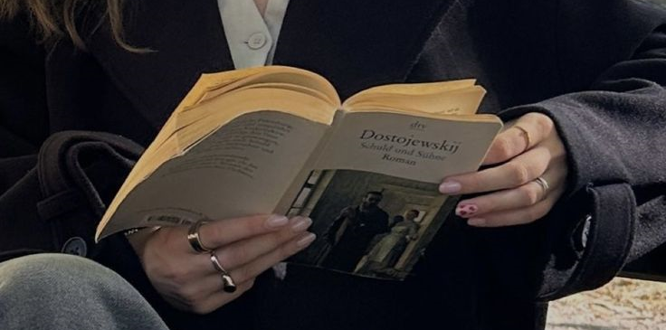

POR TRÁS DOS SINAIS: CURIOSIDADES QUE TODO
MUNDO DEVERIA SABER SOBRE LIBRAS
Que a Libras é uma Linguagem de sinais, você já sabe... mas você sabia
que ela é um idioma oficial no Brasil? Aqui, te contamos curiosidades de Libras que
todos deveriam saber!
Escrito por: Librali.
Libras é muito mais do que gestos. É um universo de comunicação visual, expressão cultural e inclusão social. Descubra curiosidades, entenda sua gramática única e veja como ela conecta pessoas.
Curiosidades sobre Libras que Todos Deveriam Saber
É uma língua oficial no Brasil
Libras foi reconhecida como meio legal de comunicação e expressão no Brasil pela Lei nº 10.436, de 24 de abril de 2002.
Não é Universal
Cada país tem sua própria língua de sinais, e mesmo dentro de um país, podem haver variações regionais. Por exemplo, nos Estados Unidos, a língua de sinais é a ASL (American Sign Language), que é bem diferente da Libras.
Tem sua própria gramática
A estrutura da Libras é diferente do português. Por exemplo, enquanto no português falamos "Eu vou para a escola", em Libras a estrutura seria algo como "Escola eu ir". A ordem das palavras reflete as características visuais e gestuais da língua.
Existem sinais para nomes próprios
As pessoas que utilizam Libras frequentemente têm um "sinal-nome", que é criado com base em características pessoais ou físicas. Isso evita o uso do alfabeto manual toda vez que o nome precisa ser referido.
Além disso, o rosto e o corpo fazem parte da comunicação. Além das mãos, expressões faciais e movimentos corporais são essenciais para transmitir o significado e a emoção na Libras. Eles ajudam a dar contexto ou a mudar o significado de um sinal.
Cultura e Educação

Você sabia que a educação bilíngue está crescendo?
Escolas especializadas no Brasil adotam um modelo bilíngue, onde Libras é ensinada como a primeira língua e o português, como a segunda. Além da educação, a arte também está presente.
A Libras tem sua própria poesia e até músicas! A interpretação de músicas em Libras combina ritmo, expressão e criatividade para traduzir emoções e significado. Entre muitos artístas e iniciativas nós temos:
Fernanda Machado e Lucas Luiz são exemplos de intérpretes que se destacam na interpretação de músicas em Libras.
Corais visuais: Grupos de surdos interpretam músicas em grupo, criando coreografias visuais sincronizadas.
Festivais Surdos: Eventos como o Festival de Cultura Surda promovem apresentações de poesia e música em Libras.